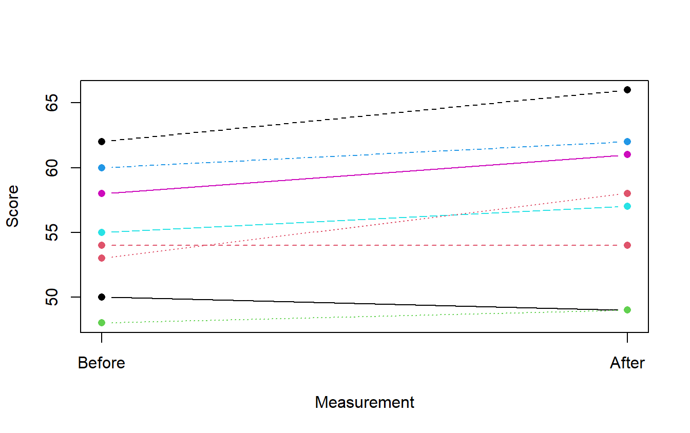
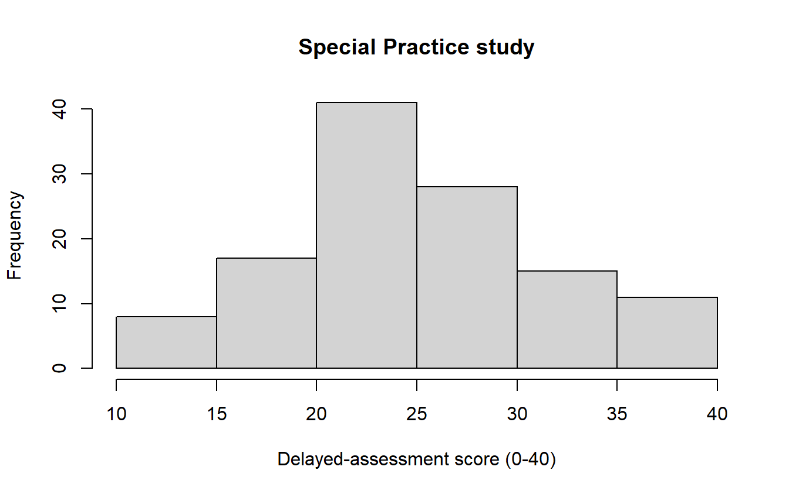
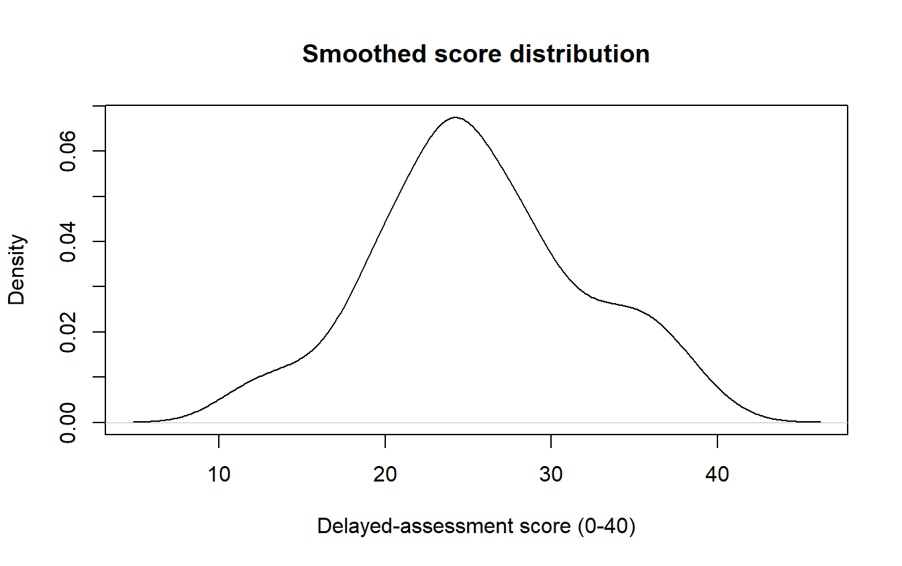
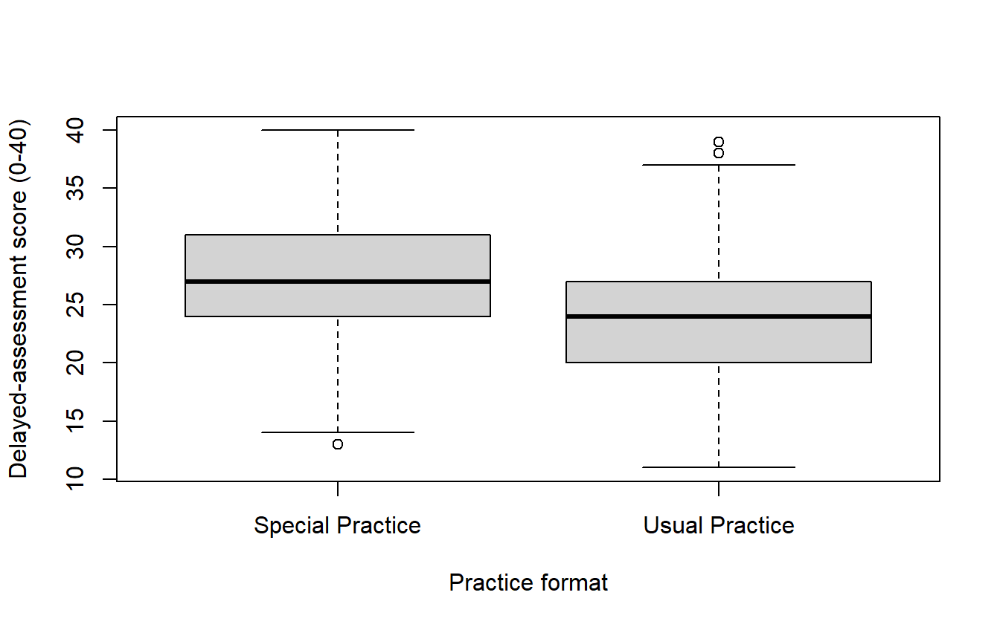
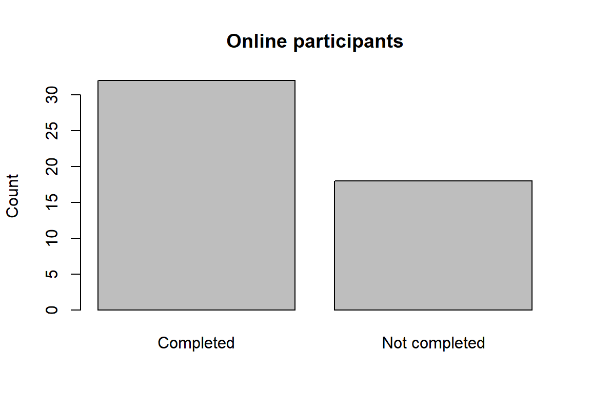
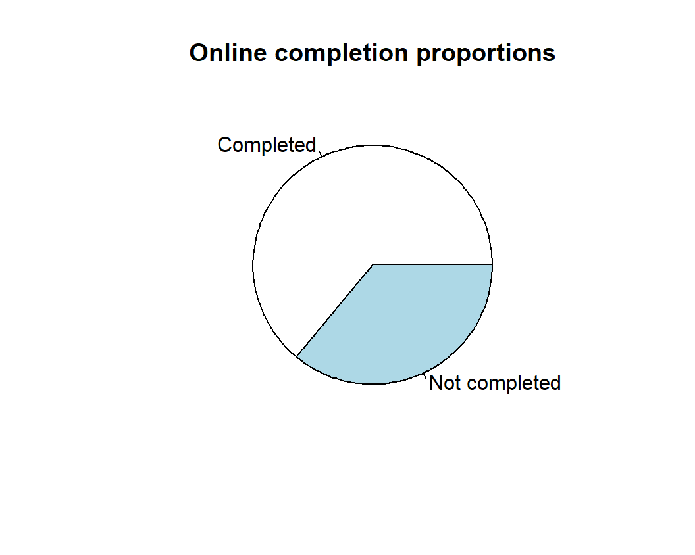
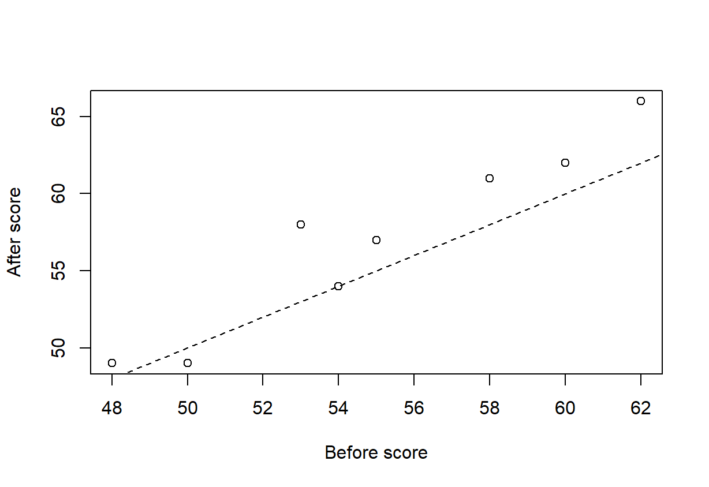
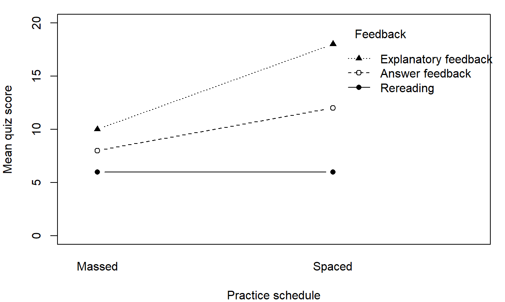

Your R workspace
Run your own code, and read the fixed code and output
R runs inside this page. Nothing is installed, and nothing you open or write leaves your browser. Start with the panel below; the sections after it explain the buttons, the data and the fixed results.
Run and save your code
First time here
- Wait for the line above Your R code to say that R is ready. R starts by itself when you open the page, which takes a few seconds.
- Read the starting code in the Your R code box. It makes five scores, then asks for their mean and their standard deviation.
- Click Run All. The answers appear under Most recent workspace output.
- Replace the starting code with your own, or click Open a CSV to bring in a data file, and run it again.
- Write what the result tells you under Your interpretation, then click Save R script and Save results and interpretation to keep both.
Open workspace for your own code or CSV
Paste the complete code for an exercise, a lab task or a homework question here, including its data-loading lines. To save edits from an example on a chapter page, copy that example's code here first.
R is starting. You can edit and save code while it loads.
Use a CSV with column names in the first row (up to 5 MB). Files stay in this browser session. For a course-supplied HSB file, open the CSV, then use hsb <- read.csv("hsb.csv").
Run Code uses the selection or current complete command. Run All uses the whole script. Clear R objects resets the analysis while keeping your code and imported files.
Your results will appear here.
What else is on this site
Use the workspace for a complete script, and read the fixed code and output for every example on the two chapter pages. For command explanations and short demonstrations, open Chapter 3 or Chapter 4. The data sources page lists every data file the site uses, with its columns and its reuse terms; the public CSVs are available at data/ paths. Open a private course CSV with Open a CSV, then run its supplied import and coding commands. The file stays in this browser session.
Save your code and results before leaving: each page has its own R session, and objects do not travel between pages.
Every example on this site uses base R with the standard stats and graphics commands; no package is loaded or installed. Programming examples use short, meaningful names such as group, score and id; when records are changed, d0 holds the starting data and dat the working copy. Calculate at full precision and report statistical results to four decimal places; rounded inputs or different software rounding can change the last digits. Native R output can show a different number of digits, and counts remain whole numbers.
How to run code
Run a complete example. Click Run All to run the whole code block or workspace script, including its data-loading commands.
Try commands one by one. Click inside a code box and place the cursor on the first command. Press Ctrl+Enter on Windows/Linux or Command+Return on macOS, or click Run Code. This runs the current complete command and advances the cursor. Select several commands first to run just that selection. Enter/Return alone adds a new line.
Objects remain available for later commands in the same code box. An assignment such as dat <- d0 usually prints nothing; run head(dat) to inspect the result. A command spanning several lines, such as a model or plot call with several arguments, runs together. When selecting text, include the entire command; an incomplete selection produces an R error. After changing data, rerun every calculation that uses them. Start Over restores a chapter block’s original code and clears that block’s objects.
Use desktop RStudio. Put the complete code in an R script. With the cursor on a command, Ctrl+Enter on Windows/Linux or Command+Return on macOS runs the current line or selected code. Select the whole command when it spans several lines. The RStudio shortcut reference gives further details. In the R console, type a complete command and press Enter/Return. Run the data-loading commands before commands that use them.
If R shows an error. An error stops the command. It damages nothing: your code, your objects and your imported file are all still there. Read the last line of the message first, because that line usually names the problem. Five messages come up again and again.
- R says
unexpected numeric constantorunexpected symbol. Two things sit side by side with nothing between them, usually a missing comma:c(50 54)should bec(50, 54). Put the comma in and run the line again. - R says
unexpected ')'. There is one closing bracket too many, as inc(50, 54)). Count the brackets from the left and delete the extra one. - R says
could not find function, or does not recognise a name you are sure you typed. R matches names letter for letter, sot.tsetis nott.testandMeanis notmean. Check the spelling and the capital letters. - A
+sign appears instead of a result. The command is not finished: a quotation mark or a bracket is still open and R is waiting for the rest. Complete it, or press Esc to cancel, and run the command again. - R says
object 'dat' not found. That object does not exist yet in this session, usually because the line that creates it has not been run. Run the setup lines above it, or choose Run All, and then run the command that uses the object.
Correct the line and run it again. If a code box has drifted too far from its starting code, Start Over restores it.
Saving and reopening work
Save your R script and results before leaving. The script includes unrun edits; the results file pairs the latest output with its code and the earlier executed commands. For a reproducible submission, keep all setup in the script, clear R objects, and use Run All before saving. Save plots separately. Submit through your course's usual system.
Reloading clears R objects and imported files. Reopen your CSV and saved script, then run it. On desktop R, use the folder containing your script and CSV as the working directory; built-in examples using data/... need that subfolder. For a stalled calculation, save your code and reload.
Fixed code and output
Open an example to read its starting code and saved result, even when the browser runtime is unavailable. These results describe the original data and settings; edits in a live cell or in the workspace do not change them.
The first example matches the workspace’s starting code: c() joins the scores, mean() gives their average, and sd() gives their sample standard deviation. You can also run it in desktop R. The mean is 16.4000 and the sample SD is 3.0496.
scores <- c(12, 15, 17, 18, 20)
mean(scores)[1] 16.4sd(scores)[1] 3.04959Chapter 3
These examples match the Chapter 3 page, in its order.
Normal areas, z scores and cutoffs
score <- 60
mu <- 50
sigma <- 5
z <- (score - mu) / sigma
c(z = z, lower_area = pnorm(z), upper_area = pnorm(z, lower.tail = FALSE)) z lower_area upper_area
2.00000000 0.97724987 0.02275013 pnorm(c(1, 2, 3)) - pnorm(-c(1, 2, 3))[1] 0.6826895 0.9544997 0.9973002qnorm(c(.025, .975))[1] -1.959964 1.959964Exercise 4: interval from supplied values
estimate <- 3.1
se <- 1.13255
critical <- 1.98036
interval <- estimate + c(-1, 1) * critical * se
sprintf("%.4f", interval)[1] "0.8571" "5.3429"One mean: known-SD z and one-sample t
n <- 25
sample_mean <- 52
null_mean <- 50
sigma_known <- 5
sample_sd <- 5
z <- (sample_mean - null_mean) / (sigma_known / sqrt(n))
t_value <- (sample_mean - null_mean) / (sample_sd / sqrt(n))
c(z = z, z_p = 2 * pnorm(-abs(z)),
t = t_value, df = n - 1, t_p = 2 * pt(-abs(t_value), n - 1)) z z_p t df t_p
2.00000000 0.04550026 2.00000000 24.00000000 0.05693985 Two sample sizes with the same difference and SD
n <- c(10, 100)
difference <- 2
sample_sd <- 5
se <- sample_sd / sqrt(n)
t_value <- difference / se
data.frame(n, SE = se, t = t_value, df = n - 1,
p = 2 * pt(-abs(t_value), df = n - 1)) n SE t df p
1 10 1.581139 1.264911 9 0.2376725632
2 100 0.500000 4.000000 99 0.0001222515Two groups: counts, means, Welch and pooled tests
d0 <- read.csv("data/chapter_03_special_practice.csv")
dat <- d0
head(dat) id group score
1 C3-001 Special Practice 17
2 C3-002 Special Practice 23
3 C3-003 Special Practice 36
4 C3-004 Special Practice 20
5 C3-005 Special Practice 28
6 C3-006 Special Practice 32table(dat$group)
Special Practice Usual Practice
60 60 special <- dat$score[dat$group == "Special Practice"]
usual <- dat$score[dat$group == "Usual Practice"]
c(Special = mean(special), Usual = mean(usual))Special Usual
27.1 24.0 c(Special_SD = sd(special), Usual_SD = sd(usual))Special_SD Usual_SD
5.999152 6.399152 level <- 0.95
welch <- t.test(special, usual, var.equal = FALSE, conf.level = level)
pooled <- t.test(special, usual, var.equal = TRUE, conf.level = level)
welch
Welch Two Sample t-test
data: special and usual
t = 2.7376, df = 117.51, p-value = 0.007152
alternative hypothesis: true difference in means is not equal to 0
95 percent confidence interval:
0.8574549 5.3425451
sample estimates:
mean of x mean of y
27.1 24.0 pooled
Two Sample t-test
data: special and usual
t = 2.7376, df = 118, p-value = 0.007148
alternative hypothesis: true difference in means is not equal to 0
95 percent confidence interval:
0.8575514 5.3424486
sample estimates:
mean of x mean of y
27.1 24.0 c(difference = mean(special) - mean(usual), SE = welch$stderr)difference SE
3.100000 1.132394 welch$conf.int[1] 0.8574549 5.3425451
attr(,"conf.level")
[1] 0.95Eight paired scores and the paired t test
before <- c(50, 54, 48, 60, 55, 58, 62, 53)
after <- c(49, 54, 49, 62, 57, 61, 66, 58)
difference <- after - before
c(n = length(difference), mean = mean(difference), SD = sd(difference)) n mean SD
8 2 2 t.test(after, before, paired = TRUE, mu = 0)
Paired t-test
data: after and before
t = 2.8284, df = 7, p-value = 0.02546
alternative hypothesis: true mean difference is not equal to 0
95 percent confidence interval:
0.3279582 3.6720418
sample estimates:
mean difference
2 t.test(difference, mu = 0)
One Sample t-test
data: difference
t = 2.8284, df = 7, p-value = 0.02546
alternative hypothesis: true mean is not equal to 0
95 percent confidence interval:
0.3279582 3.6720418
sample estimates:
mean of x
2 Connected paired-score plot
before <- c(50, 54, 48, 60, 55, 58, 62, 53)
after <- c(49, 54, 49, 62, 57, 61, 66, 58)
matplot(1:2, t(cbind(before, after)), type = "b", pch = 16,
xaxt = "n", xlab = "Measurement", ylab = "Score")
axis(1, at = 1:2, labels = c("Before", "After"))
Covariance, correlation and a unit change
x <- c(50, 54, 48, 60, 55, 58, 62, 53)
y <- c(49, 54, 49, 62, 57, 61, 66, 58)
c(covariance = cov(x, y), correlation = cor(x, y)) covariance correlation
28.1428571 0.9598913 c(covariance = cov(10 * x, y), correlation = cor(10 * x, y)) covariance correlation
281.4285714 0.9598913 cor(x, y, method = "spearman")[1] 0.9221722Histogram of the delayed-assessment scores
dat <- read.csv("data/chapter_03_special_practice.csv")
hist(dat$score, breaks = 10, main = "Special Practice study",
xlab = "Delayed-assessment score (0-40)")
Smoothed density curve
dat <- read.csv("data/chapter_03_special_practice.csv")
plot(density(dat$score), main = "Smoothed score distribution",
xlab = "Delayed-assessment score (0-40)")
Boxplots by practice format
dat <- read.csv("data/chapter_03_special_practice.csv")
boxplot(score ~ group, data = dat, xlab = "Practice format",
ylab = "Delayed-assessment score (0-40)")
Bar chart of the online participants
completed <- c(Completed = 32, "Not completed" = 18)
barplot(completed, ylab = "Count", main = "Online participants")
Pie chart of the same two categories
completed <- c(Completed = 32, "Not completed" = 18)
pie(completed, main = "Online completion proportions")
Scatterplot of before and after scores
before <- c(50, 54, 48, 60, 55, 58, 62, 53)
after <- c(49, 54, 49, 62, 57, 61, 66, 58)
plot(before, after, xlab = "Before score", ylab = "After score")
abline(a = 0, b = 1, lty = 2)
The worked two-by-two count table
counts <- matrix(c(32, 18, 18, 32), nrow = 2, byrow = TRUE,
dimnames = list(c("Online", "In person"),
c("Completed", "Not completed")))
prop.table(counts, 1) Completed Not completed
Online 0.64 0.36
In person 0.36 0.64pearson <- chisq.test(counts, correct = FALSE)
pearson$expected Completed Not completed
Online 25 25
In person 25 25pearson
Pearson's Chi-squared test
data: counts
X-squared = 7.84, df = 1, p-value = 0.00511Chapter 4
These examples match the Chapter 4 page, in its order.
The course CSV, its factor order and the six cells
feedback_data <- read.csv("data/feedback_practice.csv")
feedback_data$feedback <- factor(feedback_data$feedback,
levels = c("Rereading", "Answer feedback", "Explanatory feedback"))
feedback_data$practice <- factor(feedback_data$practice,
levels = c("Massed", "Spaced"))
head(feedback_data) student feedback practice score
1 1 Rereading Massed 4
2 2 Rereading Massed 5
3 3 Rereading Massed 7
4 4 Rereading Massed 8
5 5 Rereading Spaced 4
6 6 Rereading Spaced 5str(feedback_data)'data.frame': 24 obs. of 4 variables:
$ student : int 1 2 3 4 5 6 7 8 9 10 ...
$ feedback: Factor w/ 3 levels "Rereading","Answer feedback",..: 1 1 1 1 1 1 1 1 2 2 ...
$ practice: Factor w/ 2 levels "Massed","Spaced": 1 1 1 1 2 2 2 2 1 1 ...
$ score : int 4 5 7 8 4 5 7 8 6 7 ...table(feedback_data$feedback, feedback_data$practice)
Massed Spaced
Rereading 4 4
Answer feedback 4 4
Explanatory feedback 4 4The same 24 scores typed in
feedback_data <- data.frame(
student = 1:24,
feedback = factor(rep(c("Rereading", "Answer feedback",
"Explanatory feedback"), each = 8),
levels = c("Rereading", "Answer feedback",
"Explanatory feedback")),
practice = factor(rep(rep(c("Massed", "Spaced"), each = 4), 3),
levels = c("Massed", "Spaced")),
score = c(4, 5, 7, 8, 4, 5, 7, 8,
6, 7, 9, 10, 10, 11, 13, 14,
8, 9, 11, 12, 16, 17, 19, 20)
)
head(feedback_data) student feedback practice score
1 1 Rereading Massed 4
2 2 Rereading Massed 5
3 3 Rereading Massed 7
4 4 Rereading Massed 8
5 5 Rereading Spaced 4
6 6 Rereading Spaced 5table(feedback_data$feedback, feedback_data$practice)
Massed Spaced
Rereading 4 4
Answer feedback 4 4
Explanatory feedback 4 4The Massed subset, counts, means and SDs
feedback_data <- read.csv("data/feedback_practice.csv")
feedback_data$feedback <- factor(feedback_data$feedback,
levels = c("Rereading", "Answer feedback", "Explanatory feedback"))
feedback_data$practice <- factor(feedback_data$practice,
levels = c("Massed", "Spaced"))
massed <- subset(feedback_data, practice == "Massed")
nrow(massed)[1] 12table(massed$feedback)
Rereading Answer feedback Explanatory feedback
4 4 4 aggregate(score ~ feedback, data = massed, mean) feedback score
1 Rereading 6
2 Answer feedback 8
3 Explanatory feedback 10tapply(massed$score, massed$feedback, sd) Rereading Answer feedback Explanatory feedback
1.825742 1.825742 1.825742 Dotplot of the 12 Massed scores with group means
feedback_data <- read.csv("data/feedback_practice.csv")
feedback_data$feedback <- factor(feedback_data$feedback,
levels = c("Rereading", "Answer feedback", "Explanatory feedback"))
massed <- subset(feedback_data, practice == "Massed")
par(mar = c(4, 9, 1, 1))
stripchart(score ~ feedback, data = massed,
method = "stack", pch = 16, las = 1,
xlab = "Quiz score (0-20)", ylab = "", xlim = c(0, 20))
points(tapply(massed$score, massed$feedback, mean), 1:3,
pch = 4, cex = 1.7, lwd = 2)
Boxplots of the same 12 scores
feedback_data <- read.csv("data/feedback_practice.csv")
feedback_data$feedback <- factor(feedback_data$feedback,
levels = c("Rereading", "Answer feedback", "Explanatory feedback"))
massed <- subset(feedback_data, practice == "Massed")
boxplot(score ~ feedback, data = massed,
xlab = "Feedback condition", ylab = "Quiz score (0-20)")
One-way ANOVA table for the Massed subset
feedback_data <- read.csv("data/feedback_practice.csv")
feedback_data$feedback <- factor(feedback_data$feedback,
levels = c("Rereading", "Answer feedback", "Explanatory feedback"))
massed <- subset(feedback_data, practice == "Massed")
one_way <- aov(score ~ feedback, data = massed)
summary(one_way) Df Sum Sq Mean Sq F value Pr(>F)
feedback 2 32 16.000 4.8 0.0381 *
Residuals 9 30 3.333
---
Signif. codes: 0 '***' 0.001 '**' 0.01 '*' 0.05 '.' 0.1 ' ' 1Residual sum of squares, df and mean squares
feedback_data <- read.csv("data/feedback_practice.csv")
feedback_data$feedback <- factor(feedback_data$feedback,
levels = c("Rereading", "Answer feedback", "Explanatory feedback"))
massed <- subset(feedback_data, practice == "Massed")
one_way <- aov(score ~ feedback, data = massed)
SS_W <- deviance(one_way)
df_W <- df.residual(one_way)
MS_W <- SS_W / df_W
c(SS_W = SS_W, df_W = df_W, MS_W = MS_W) SS_W df_W MS_W
30.000000 9.000000 3.333333 c(MS_B = 32 / 2, F = (32 / 2) / MS_W,
p = pf((32 / 2) / MS_W, 2, df_W, lower.tail = FALSE)) MS_B F p
16.00000000 4.80000000 0.03813143 Two declared comparisons and their Bonferroni intervals
feedback_data <- read.csv("data/feedback_practice.csv")
feedback_data$feedback <- factor(feedback_data$feedback,
levels = c("Rereading", "Answer feedback", "Explanatory feedback"))
massed <- subset(feedback_data, practice == "Massed")
one_way <- aov(score ~ feedback, data = massed)
group_means <- tapply(massed$score, massed$feedback, mean)
group_n <- table(massed$feedback)
weights <- rbind(Answer = c(-1, 1, 0), Explain = c(-1, 0, 1))
estimate <- drop(weights %*% group_means)
MS_W <- deviance(one_way) / df.residual(one_way)
SE <- sqrt(MS_W * rowSums(sweep(weights^2, 2, group_n, "/")))
critical <- qt(1 - .05 / (2 * 2), df.residual(one_way))
c(critical = critical)critical
2.685011 data.frame(estimate, SE,
lower = estimate - critical * SE,
upper = estimate + critical * SE) estimate SE lower upper
Answer 2 1.290994 -1.4663341 5.466334
Explain 4 1.290994 0.5336659 7.466334All three pairwise differences with Tukey
feedback_data <- read.csv("data/feedback_practice.csv")
feedback_data$feedback <- factor(feedback_data$feedback,
levels = c("Rereading", "Answer feedback", "Explanatory feedback"))
massed <- subset(feedback_data, practice == "Massed")
one_way <- aov(score ~ feedback, data = massed)
TukeyHSD(one_way, "feedback") Tukey multiple comparisons of means
95% family-wise confidence level
Fit: aov(formula = score ~ feedback, data = massed)
$feedback
diff lwr upr p adj
Answer feedback-Rereading 2 -1.6044637 5.604464 0.3149865
Explanatory feedback-Rereading 4 0.3955363 7.604464 0.0310140
Explanatory feedback-Answer feedback 2 -1.6044637 5.604464 0.3149865Six cells, marginal means and the full factorial ANOVA
feedback_data <- read.csv("data/feedback_practice.csv")
feedback_data$feedback <- factor(feedback_data$feedback,
levels = c("Rereading", "Answer feedback", "Explanatory feedback"))
feedback_data$practice <- factor(feedback_data$practice,
levels = c("Massed", "Spaced"))
table(feedback_data$feedback, feedback_data$practice)
Massed Spaced
Rereading 4 4
Answer feedback 4 4
Explanatory feedback 4 4cell_means <- with(feedback_data,
tapply(score, list(feedback, practice), mean))
cell_means Massed Spaced
Rereading 6 6
Answer feedback 8 12
Explanatory feedback 10 18rowMeans(cell_means) Rereading Answer feedback Explanatory feedback
6 10 14 colMeans(cell_means)Massed Spaced
8 12 full_fit <- aov(score ~ feedback * practice, data = feedback_data)
summary(full_fit) Df Sum Sq Mean Sq F value Pr(>F)
feedback 2 256 128.00 38.4 3.21e-07 ***
practice 1 96 96.00 28.8 4.23e-05 ***
feedback:practice 2 64 32.00 9.6 0.00145 **
Residuals 18 60 3.33
---
Signif. codes: 0 '***' 0.001 '**' 0.01 '*' 0.05 '.' 0.1 ' ' 1Residuals against fitted cell means
feedback_data <- read.csv("data/feedback_practice.csv")
feedback_data$feedback <- factor(feedback_data$feedback,
levels = c("Rereading", "Answer feedback", "Explanatory feedback"))
feedback_data$practice <- factor(feedback_data$practice,
levels = c("Massed", "Spaced"))
full_fit <- aov(score ~ feedback * practice, data = feedback_data)
par(mar = c(4, 4, 1, 1))
plot(fitted(full_fit), resid(full_fit), pch = 16,
xlab = "Fitted cell mean", ylab = "Residual",
xlim = c(0, 20), ylim = c(-4, 4))
abline(h = 0, lty = 2)
table(round(resid(full_fit), 4))
-2 -1 1 2
6 6 6 6 Eta squared for the one-way and factorial fits
feedback_data <- read.csv("data/feedback_practice.csv")
feedback_data$feedback <- factor(feedback_data$feedback,
levels = c("Rereading", "Answer feedback", "Explanatory feedback"))
feedback_data$practice <- factor(feedback_data$practice,
levels = c("Massed", "Spaced"))
massed <- subset(feedback_data, practice == "Massed")
one_way <- aov(score ~ feedback, data = massed)
one_SS <- anova(one_way)[["Sum Sq"]]
c(SS_B = one_SS[1], SS_W = one_SS[2], SS_T = sum(one_SS),
eta_squared = one_SS[1] / sum(one_SS)) SS_B SS_W SS_T eta_squared
32.000000 30.000000 62.000000 0.516129 full_fit <- aov(score ~ feedback * practice, data = feedback_data)
full_table <- anova(full_fit)
full_SS <- full_table[["Sum Sq"]]
names(full_SS) <- rownames(full_table)
full_SS feedback practice feedback:practice Residuals
256 96 64 60 round(full_SS / sum(full_SS), 4) feedback practice feedback:practice Residuals
0.5378 0.2017 0.1345 0.1261 Interaction plot of the six cell means
feedback_data <- read.csv("data/feedback_practice.csv")
feedback_data$feedback <- factor(feedback_data$feedback,
levels = c("Rereading", "Answer feedback", "Explanatory feedback"))
feedback_data$practice <- factor(feedback_data$practice,
levels = c("Massed", "Spaced"))
par(mar = c(4, 4, 1, 1))
with(feedback_data,
interaction.plot(practice, feedback, score, type = "b",
pch = c(16, 1, 17), lty = 1:3,
xlab = "Practice schedule", ylab = "Mean quiz score",
trace.label = "Feedback", ylim = c(0, 20)))
Schedule differences and the selected Scheffe interval
feedback_data <- read.csv("data/feedback_practice.csv")
feedback_data$feedback <- factor(feedback_data$feedback,
levels = c("Rereading", "Answer feedback", "Explanatory feedback"))
feedback_data$practice <- factor(feedback_data$practice,
levels = c("Massed", "Spaced"))
full_fit <- aov(score ~ feedback * practice, data = feedback_data)
cell_means <- with(feedback_data,
tapply(score, list(feedback, practice), mean))
schedule_difference <- cell_means[, "Spaced"] - cell_means[, "Massed"]
schedule_difference Rereading Answer feedback Explanatory feedback
0 4 8 selected <- schedule_difference["Answer feedback"] -
schedule_difference["Rereading"]
error_df <- df.residual(full_fit)
MS_E <- deviance(full_fit) / error_df
selected_SE <- sqrt(MS_E * (1/4 + 1/4 + 1/4 + 1/4))
scheffe <- sqrt(2 * qf(.95, 2, error_df))
c(estimate = unname(selected), SE = selected_SE, multiplier = scheffe) estimate SE multiplier
4.000000 1.825742 2.666292 sprintf("%.4f", unname(selected) + c(-1, 1) * scheffe * selected_SE)[1] "-0.8680" "8.8680"